Casanova Art Studio

Manifiesto artístico
“Arte que emerge desde la profundidad sensorial, espiritual y natural. Cada pieza es un testimonio de tacto, memoria y visión. Isaac Casanova transforma lo invisible en forma, lo intangible en textura.”
Biografía artística
Nacido en Costa Rica en 1988, Isaac Casanova creció rodeado de arte, naturaleza y sensibilidad visual...
Trayectoria
Ha participado en los Abiertos de Cerámica del Museo Calderón Guardia en las exposiciones “Modularis” y “Más allá del objeto”.
Líneas de exploración
- Cerámica expresiva y procesos de Raku
- Reptiles como metáfora de adaptación
- Texturas orgánicas inspiradas en bosque y tierra
- Escultura figurativa con enfoque en emoción
Galería
 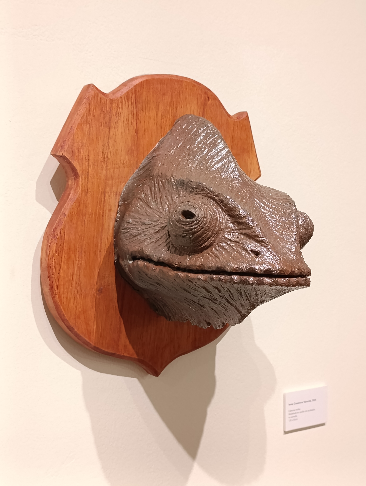
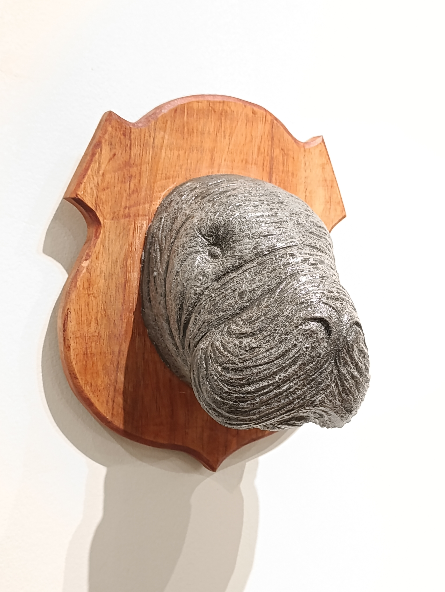
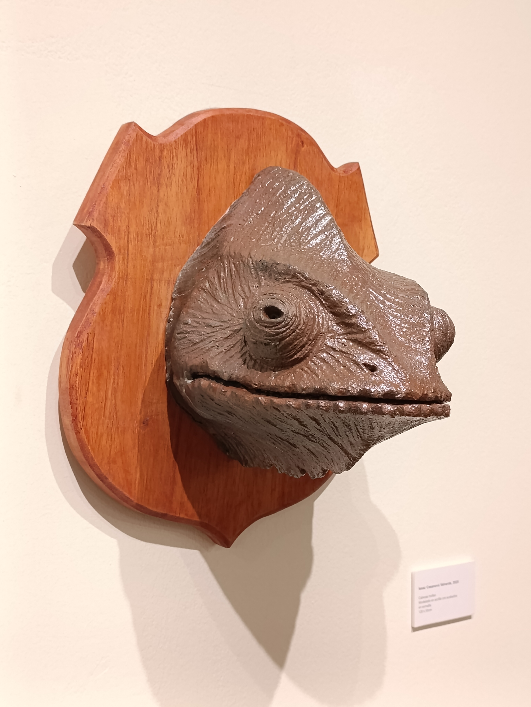
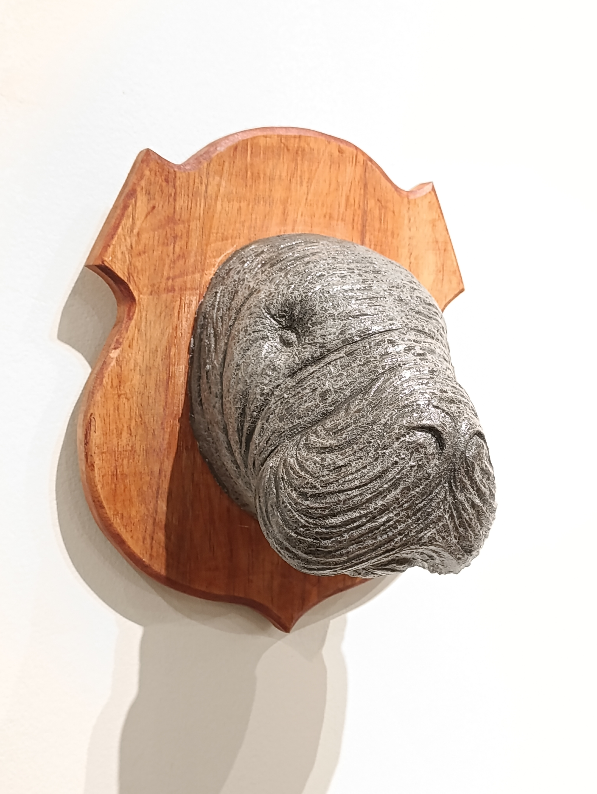
 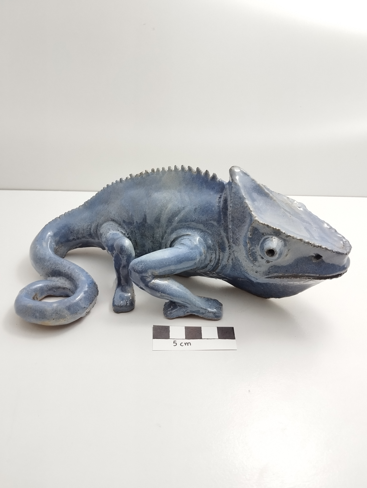
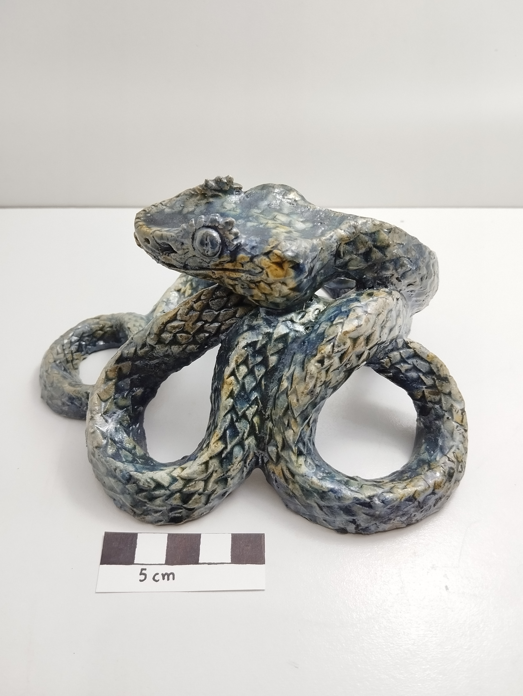
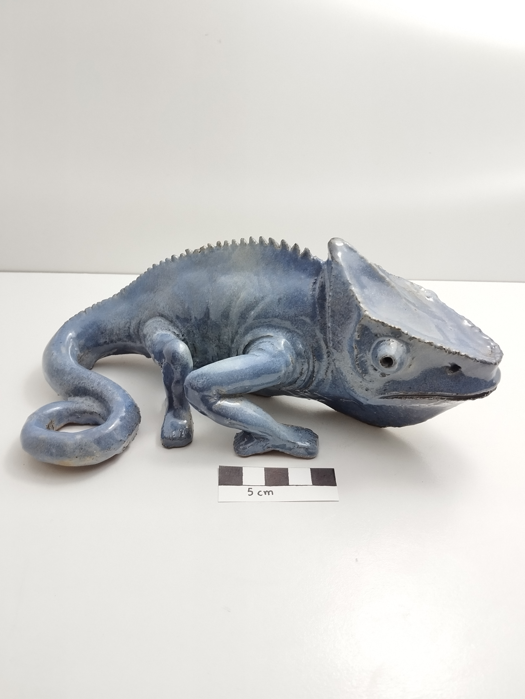
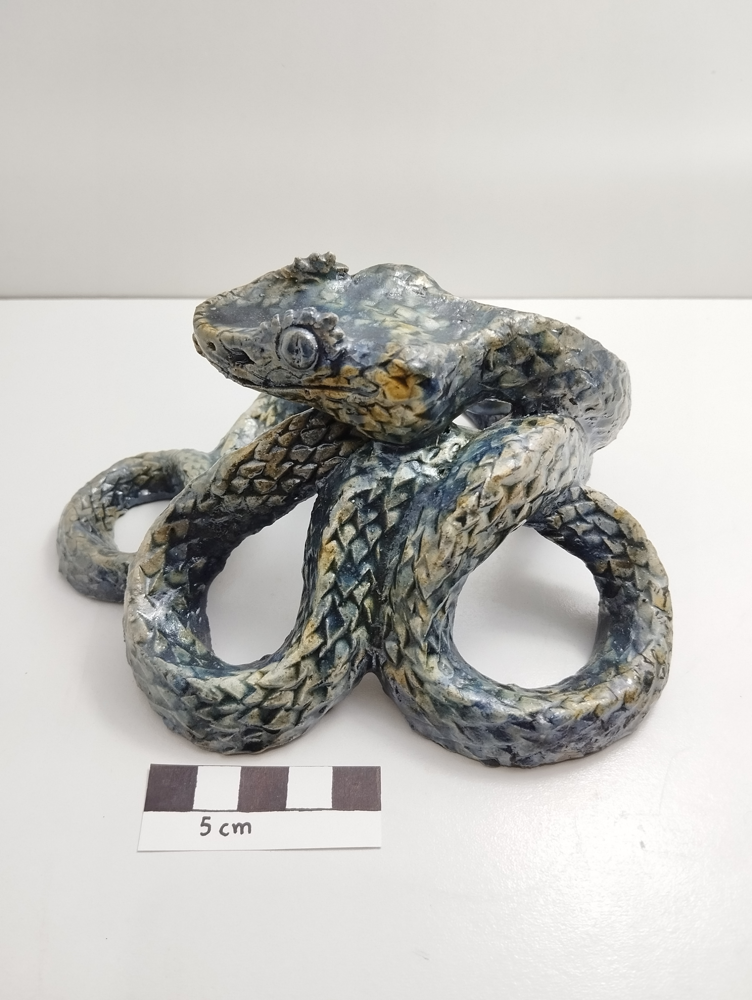

 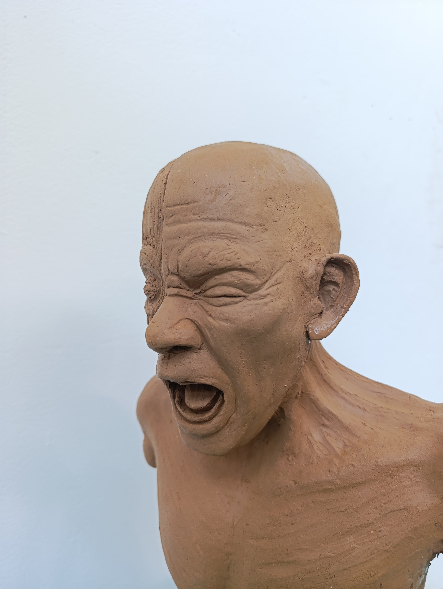
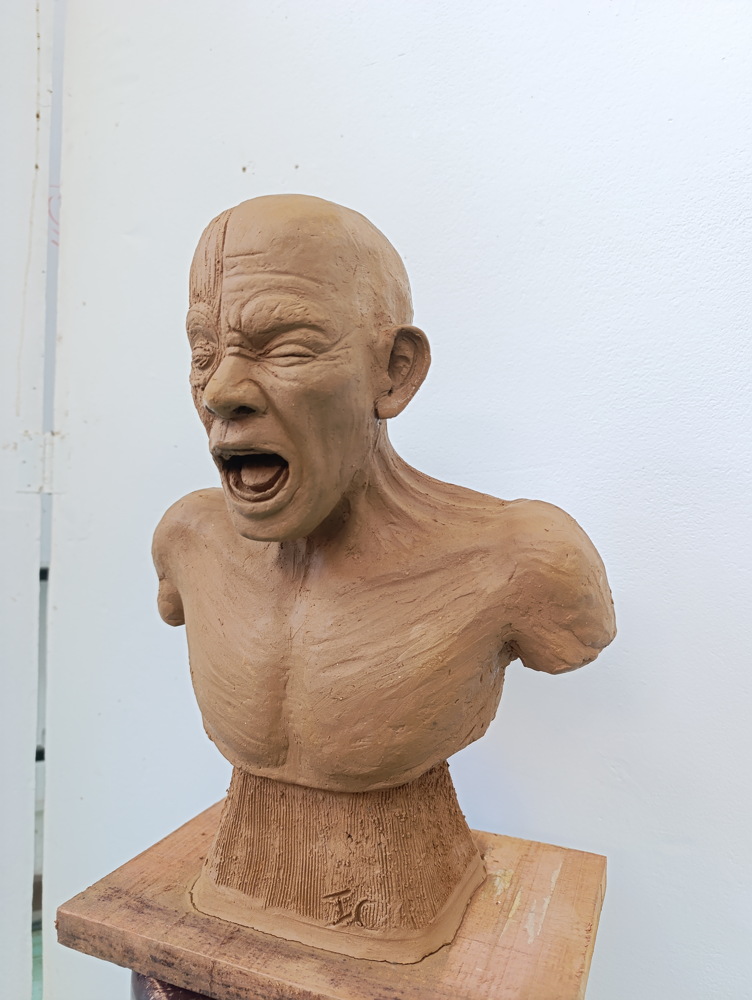
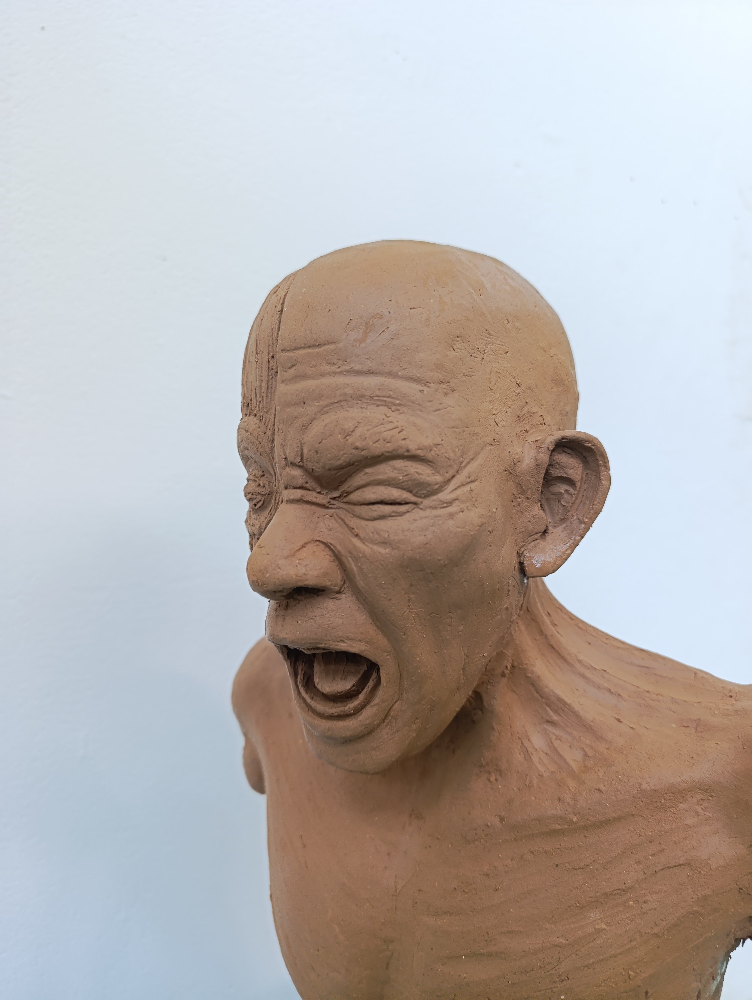
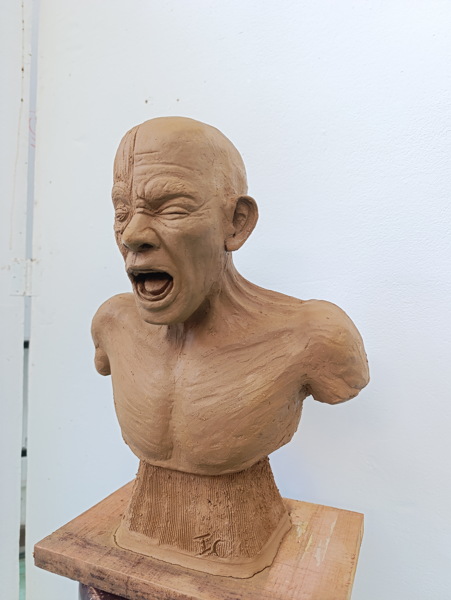


Contacto
Isaac Esteban Casanova Valverde
Email: casanovaisaac88@gmail.com
WhatsApp: +506 8548 3650
San José, Costa Rica 🇨🇷
Manifiesto artístico
Lee el manifiesto completo que guía mi obra, mi visión sensorial y espiritual del arte.
Leer manifiesto artístico completo (PDF)